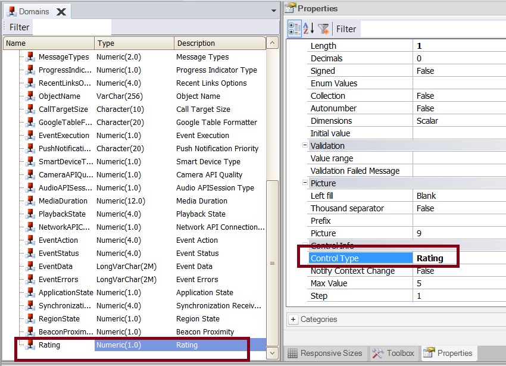
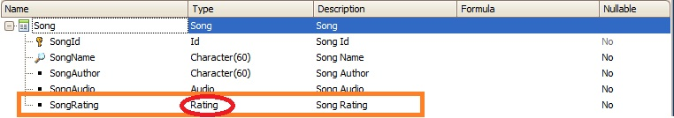
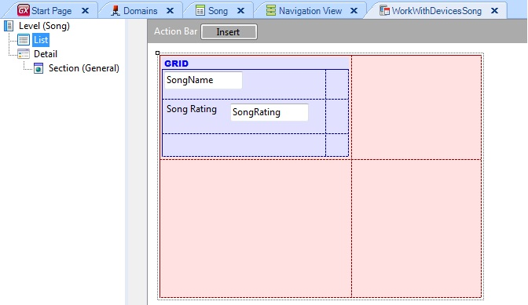
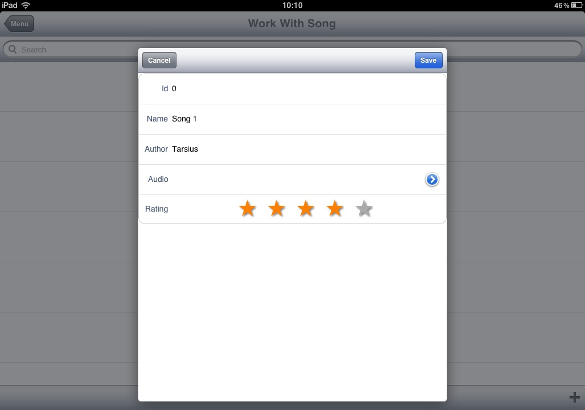
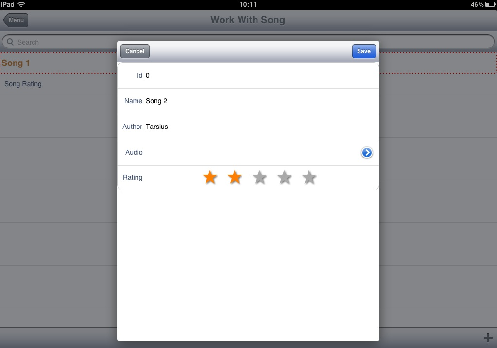
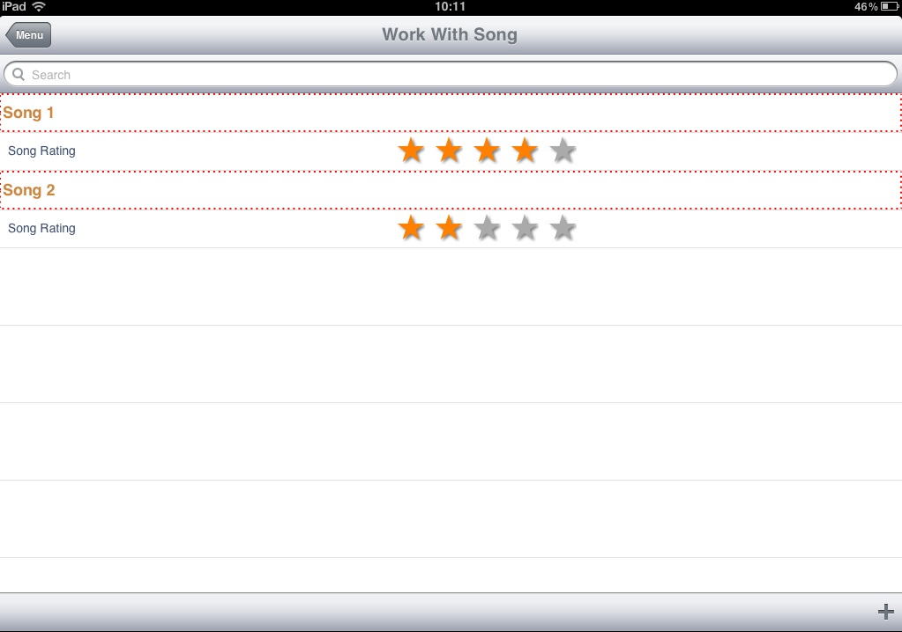
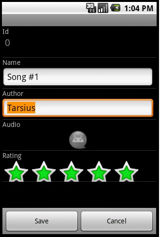
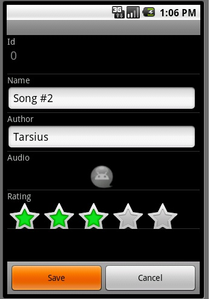
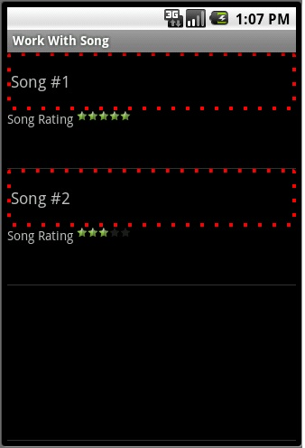

Rating Control (GeneXus 16)
The Rating control allows displaying a numeric variable with a "star control". It is useful when creating polls or when you want the user to rate items. The control is supported for SD and Web applications (using the Web Abstract Editor). Let's start by setting:
 Next, create a Transaction object and, at least, one attribute of the "Rating" type. Apply the work with for smart devices pattern (see Applying Work With for Smart Devices Pattern). In this example, we are going to use the following transaction:  Add the attribute to the List node, so you can see the rating of a certain song in that section:  Press F5 and see the results. iOS   Android   WebNote: in the example images, some theme settings have been changed to enhance how the Song name is displayed. Videos |